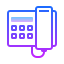

# spo:// Checklist documenti
LAVORATORI DOMESTICI: GUIDA
Eventuale Assunzione:
Se si assume un Lavoratore con cittadinanza extra U.E.:
- Passaporto;
- Fornire il permesso/la carta di soggiorno adatto allo svolgimento di attività lavorativa. Se scaduto/a - la relativa ricevuta posta assicurata del rinnovo
Se il Datore di lavoro assume il Lavoratore con la cittadinanza extra UE in regime di convivenza:
- Sia la Comunicazione di cessione di fabbricato*
- Che la Dichiarazione di ospitalità, rilasciata dalla Questura di residenza.
Alcuni gestionali predispongo entrambi i moduli sopraindicati in un unico file.
La Comunicazione di cessione di fabbricato prescinde dalla nazionalità e cittadinanza. E' richiesta ogniqualvolta che si assume un Lavoratore domestico in regime di convivenza, e dev'essere presentata presso la Questura di riferimento.
Considerazioni importanti:
Diplomi/attestati e livelli CCNL
Eventuale possesso di diplomi/attestati qualificanti, permetterà di inquadrare la Lavoratrice con livello CCNL più alto
- DS - livello per Assistenti familiari - Educatori formati, personale qualificato che assiste persone non autosufficienti
- CS - per ruoli di badanti, senza specifica formazione, che assistono persone non autosufficienti
- BS - babysitter (comunque, assistenza a persone autosufficienti)
- AS - mera compagnia (babysitter se mera vigilanza senza svolgimento di alcuna prestazione di lavoro)
- livelli A e B - per ruoli di domestica, colf.
Datore di lavoro ≠ Assistito
Datore di lavoro ≠ Assistito
non devono necessariamente coincidere
Caso in cui, per esempio, i figli (generalmente) assumono un Lavoratore domestico per assistere i propri genitori
Regime di convivenza e lavoro notturno (54h diurne ≠ 24h)
Non esiste turno notturno per lavoratore assunto in regime di convivenza, se non lo si specifica:
Assunzione di Badante (Livello CS) in regime di convivenza (54h diurne!) non intende in alcun modo lavoro 24h! In via occasionale, in caso di necessità, può essere svolto, e dev'essere retribuito adeguatamente. Trattasi di lavoro straordinario se non è abituale; trattasi di modalità diversa se costante.
Dunque, se l'Assistito necessitasse di continua assistenza notturna, trova luogo Assistenza notturna, la quale, si differenzia da mera Presenza notturna.
Assistenza notturna ≠ Presenza notturna
[di solito 54h settimanali per entrambi, regime di convivenza applicato automaticamente]
Assistenza notturna
- necessità di assistenza e cure continue notturne;
- esige ulteriore assunzione di un lavoratore aggiuntivo;
- regime di convivenza applicato in automatico;
- 54h settimanali INPS, ma ore 48 ai fini CAS.SA COLF
- livelli CS/DS/BS;
- dalle ore 20:00 alle 8:00 (40h su 5, oppure, 48h su 6)
- spetta l'indennità di vitto e alloggio.
Presenza notturna
- mera presenza
- perciò può essere prestata da Badante diurna convivente 54h, che gode già di vitto e alloggio (straordinario);
- se svolta da un'altra persona assunta appositamente, non prevede il vitto/alloggio => retribuzione mensilizzata.
- regime di convivenza applicato in automatico;
- 54h settimanali INPS, ma ore 30 ai fini CAS.SA COLF;
- dalle ore 21:00 alle 08:00 (o 25h su 5, oppure 30h su 6)
Contratto a termine / causali / proroghe
Costo contributivo e causali
Contratto a tempo determinato comporterà maggior costo contributivo per il Datore di lavoro
Assunzione di un lavoratore domestico, a tempo determinato (contratto a termine) per i primi 12 mesi non è soggetta a causali.
Il rinnovo del determinato, invece, esige sempre una causale tra le previste.
Assunzione a termine per > 12 mesi e non più di 24 mesi, richiede inserimento di una della causali previste, di cui sotto;
N.B.: max 4 proroghe:
- per sostituzioni di lavoratore già in forza;
- per cause temporanee ed oggettive, estranee all'ordinaria attività,
- altre, ma sempre previste dal CCNL
Altri avvisi
Un lavoratore domestico può assistere più anziani
Un lavoratore domestico può assistere più anziani:
Per esempio, quando entrambi i coniugi anziani necessitano di assistenza continua. Va dichiarato.
Videosorveglianza (obbligo avviso scritto)
Se l'abitazione-luogo di lavoro dovesse essere provvista di videosorveglianza, il Lavoratore ne dev'essere avvisato, per iscritto, tramite un modulo specifico, con i relativi riferimenti al rispetto della Privacy, e firmato dal Lavoratore per presa conoscenza.
TFR (anticipazione)
Il TRF maturato può essere anticipato SE rispetta le condizioni poste dal CCNL:
In quanto il Datore di lavoro non è un sostituto d'imposta, il CCNL ha contemplato la possibilità di anticipazione del TRF, previa richiesta scritta e firmata da parte della Lavoratrice: [art. 42 punto 2 CCNL: << I datori di lavoro anticiperanno, a richiesta del lavoratore e per non più di una volta all'anno, il T.F.R. nella misura massima del 70% di quanto maturato>>].
Iscrizione alla CAS.SA COLF è obbligatoria
Non è un optional!
Vi si devono iscrivere entrambe le Parti: sia il Datore di lavoro, che la Lavoratrice!

ChiamaORARI
- online dal Lunedì al Venerdì 09:30–13:00 # 15:00–18:00
- online il Sabato 10:30–12:30
Sportello Pratiche Online
Pratiche fiscali · Servizi · Pratiche previdenziali